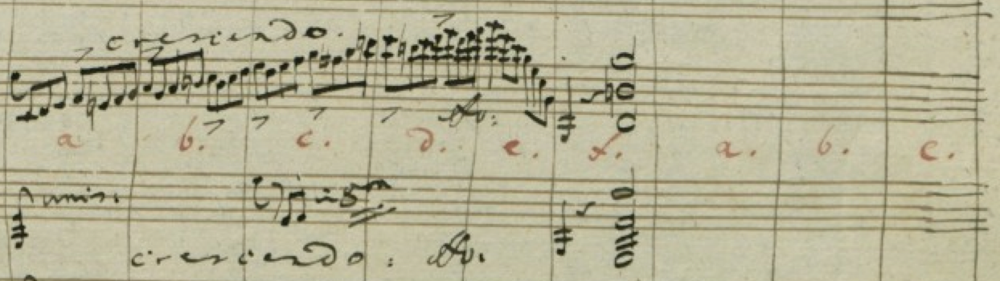
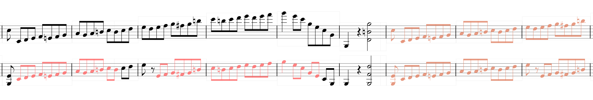
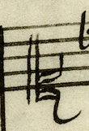
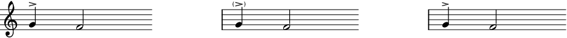

This chapter introduces markup targeting at digital scholarly editions of music. In
9.1 Critical Apparatus, the alignment of multiple sources / witnesses of the same musical text is discussed.
9.1 Editorial Markup covers editorial observations in and interventions to the text. 9.1 Genetic Markup finally deals with the special requirements and needs of genetic editions in music.
9.1Critical Apparatus
This chapter describes how to encode differences between multiple exemplars of the
same musical work (often referred to in MEI as ‘sources’). The mechanisms and elements
described in this chapter are closely related to their counterparts in the TEI guidelines.
It is also important to refer to chapter 9.1 Editorial Markup of these guidelines, especially concerning the <choice> element described therein.
9.1.1General Usage
The following elements are defined in the critApp Module:
Contains a single reading within a textual variation.
An <app> element always encapsulates the differences between varying sources. Therefore, it
must contain at least two child elements. Possible child elements are <lem> and <rdg>, which use the same model, but have a different meaning: Whereas <lem> is used for prioritizing one alternative, a <rdg> has no such additional meaning and simply indicates a reading as found in one or
more sources. Accordingly, <lem> is allowed only once in <app>, whereas <rdg> may appear as often as necessary.
<app>
<lem>
<!-- preferred reading -->
</lem>
<rdg>
<!-- alternative reading -->
</rdg>
<rdg>
<!-- alternative reading -->
</rdg>
</app>
Listing 271.
The <rdg> (and <lem>) elements use the @source attribute to point to one or more descriptions of the bibliographic sources containing
the material they mark:
<!-- In the document content: -->
<app>
<rdg source="#critApp.source1">
<!-- reading of source 1 -->
</rdg>
<rdg source="#critApp.source2 #critApp.source3">
<!-- reading of sources 2 *and* 3 -->
</rdg>
</app>
Listing 272.
<!-- Earlier in the document header: -->
<sourceDesc>
<source xml:id="critApp.source1">
<!-- bibliographic description of source 1 -->
</source>
<source xml:id="critApp.source2">
<!-- bibliographic description of source 2 -->
</source>
<source xml:id="critApp.source3">
<!-- bibliographic description of source 3 -->
</source>
</sourceDesc>
Listing 273.
The @seq attribute may be used on <lem> or <rdg> to record the sequence of a series of readings. In the following example, the material
in source B is marked as sequential to (and perhaps derived from) the reading in source
A:
If a source has additional content that is not found in other sources, an empty <rdg> element may be used to indicate the lack of material in the other sources. In the
following example, source 1 includes material that is not found in sources 2 and 3:
<app>
<rdg source="#critApp.source1">
<!-- additional content of source 1 -->
</rdg>
<rdg source="#critApp.source2 #critApp.source3"/>
</app>
Listing 275.
When working with a large number of sources, it might seem tedious to provide references
for all sources. However, use of the <rdg> element without @source is not recommended because such an encoding is not explicit and is therefore difficult
to process.
9.1.1Variants in Musical Content
The <app> element may be used to accommodate textual variation at nearly any point in a musical
text. For example, it may be used to indicate minor differences such as stem directions:
<layer>
<!-- preceding notes -->
<app>
<rdg source="#critApp.source1">
<note dur="2"oct="4"pname="b"stem.dir="down"/>
</rdg>
<rdg source="#critApp.source2">
<note dur="2"oct="4"pname="b"stem.dir="up"/>
</rdg>
</app>
<!-- following notes -->
</layer>
Listing 276.
or to indicate more significant differences, such as the insertion of extra measures:
<section>
<measure>…</measure>
<measure>…</measure>
<app>
<rdg source="#critApp.source1"/>
<rdg source="#critApp.source2">
<!-- source 2 has 2 measures not found in source 1 -->
<measure>…</measure>
<measure>…</measure>
</rdg>
</app>
<measure>…</measure>
</section>
Listing 277.
However, the flexibility in the location of <app> places a burden on the encoder to ensure that the <app>, <rdg>, and <lem> elements are used correctly; that is, the content of every <rdg> and <lem> has to be a valid replacement for its parent <app>, even though this cannot be controlled effectively by the MEI schema.
9.1.1Variants in Score Definitions
In addition to its use for differentiation of the musical content of multiple sources,
<app> may also be utilized to describe the layout of different scores, even when the musical
content itself remains the same. An example of this is two sources that have the same
content, but a different ordering of staves on which the content is written. By definition,
the order of staves in MEI is described in and derived from the order of <staffDef> elements in <scoreDef>, not from the order of <staff> elements within a measure [not available in this MEI customization]. The <staff> element in a measure points to its corresponding <staffDef> using the same value for @n on both elements.
This rather loose mechanism makes it possible to point dynamically to the correct
staff definition for a given source. The following example demonstrates how this can
be accomplished for two sources, both presenting a two-staff score, but with differing
staff order. No further <app> element is necessary within the measure [not available in this MEI customization] to describe the alternative score order of the sources.
<score>
<app>
<rdg source="#critApp.source1">
<scoreDef>
<staffGrp>
<staffDef n="1"/>
<staffDef n="2"/>
</staffGrp>
</scoreDef>
</rdg>
<rdg source="#critApp.source2">
<scoreDef>
<staffGrp>
<!-- The order of <staffDef> elements defines score order, not its @n attribute! -->
<staffDef n="2"/>
<staffDef n="1"/>
</staffGrp>
</scoreDef>
</rdg>
</app>
<section>
<measure>
<staff n="1">…</staff>
<staff n="2">…</staff>
</measure>
</section>
</score>
Listing 278.
When unique values for @n on <layerDef> and <layer> are provided, it is possible to reallocate layers in the same fashion as staves.
This mechanism may also be used to describe not only differing page orientations,
formats and margins, but also clefs and keys.
The use of <app> in conjunction with <staffDef> illustrates the greater flexibility of connecting <staff> and <staffDef> by a shared @n value. A technically more robust alternative to @n would be to use the @def attribute on <staff>, which points to the @xml:id of a <staffDef>. However, this strong connection would be tied to one specific <staffDef>, and would not allow to pick one alternative out of an <app>.
9.1.1Nesting Apparati
In some situations, musical sources will agree at one level while differing at a lower
level. For these cases, <app> elements may be nested to any level necessary. In the following example, there are
three sources, two of which agree on the addition of a measure, but differ in the
content of the added measure:
<section>
<measure>…</measure>
<app>
<rdg source="#critApp.source1"/>
<rdg source="#critApp.source2 critApp.#source3">
<!-- whereas source1 omits it, source2 and source3 have an additional measure -->
<measure>
<staff>
<layer>
<app>
<!-- while source2 provides a measure rest, source3 has a whole note -->
<rdg source="#critApp.source2">
<mRest/>
</rdg>
<rdg source="#critApp.source3">
<note dur="1"oct="3"pname="g"/>
</rdg>
</app>
</layer>
</staff>
</measure>
</rdg>
</app>
<measure>…</measure>
</section>
Listing 279.
When nesting <app> elements, it is important that the value(s) in the child <rdg> element’s @source attribute must be a strict subset of the ancestor <rdg> element’s @source value.
9.1Editorial Markup
It is often necessary to render an account of any changes made to a musical text during
its creation (and any subsequent editing) and to accommodate editorial comment necessitated
by an editorial process. The elements and attributes described in this chapter may
be used to record such editorial interventions, whether made by the composer, the
copyists of the manuscript, the editor of an earlier edition used as a copy text,
or the current encoder/editor.
The scope of the elements described herein is therefore the description of features
relating to the genesis, later revision and editorial interpretation of a text. Mechanisms
for describing multiple sources are described in chapter 9.1 Critical Apparatus of these Guidelines, while the full setup for genetic editions is described in chapter
9.1 Genetic Markup.
The elements described in this chapter may be contained by a wide range of other MEI
elements and, in turn, may contain a variety of elements. The encoder must assume
responsibility for the appropriateness of the markup; that is, a great many combinations
of editorial and transcriptional markup are technically possible, but care must be
taken to see that the encoding does not contravene the rationale of these Guidelines.
In general, it should be ensured that a file would be valid if the editorial markup
would be omitted, as such a validation cannot be ensured in an efficient way by the
MEI schema.
For most of the elements discussed here, some encoders may wish to indicate both a
responsibility; that is, a coded value indicating the person or agency responsible
for making the editorial intervention in question, and an indication of the degree
of certainty which the encoder wishes to associate with the intervention. The elements
discussed here thus may potentially carry the following optional attributes:
Indicates the agent(s) responsible for some aspect of the text’s transcription,
editing, or encoding. Its value must point to one or more identifiers declared in
the
document header.
They are available through the generic attribute class att.common, which is a member of att.responsibility, and the attribute class att.edit, to which these elements subscribe.
Many of the elements discussed here can be used in two ways. Their primary purpose
is to indicate that their content represents an editorial intervention (or, in some
cases, the lack of intervention) of a specific kind. Sometimes, pairs or other meaningful
groupings of such elements can be recorded, then wrapped within the special purpose
<choice> element:
Groups a number of alternative encodings for the same point in a text.
Wrapping elements this way enables the encoder to represent, for example, a text in
its ‘original’, uncorrected form alongside the same text in one or more ‘edited’ forms.
Making use of this style of representation, software may dynamically switch between
the ‘Urtext view’ of the text and one or more ‘views’ of the text after the application
of the encoded editorial interventions.
Three categories of editorial intervention are discussed by the remainder of this
chapter:
indication or correction of apparent errors;
indication of regularization of variant, irregular, non-standard, or eccentric forms;
and
editorial additions, suppressions, and omissions.
9.1.1Abbreviations
MEI offers methods for marking abbreviations in prose, as in the following example:
<p>
... the next passage shall be performed in
<abbr>pno:</abbr>
...
</p>
Listing 280.
or abbreviations in the music itself, as in the following example:
<abbr>
<bTrem unitdur="16">
<note dur="4"oct="5"pname="c"stem.mod="2slash"/>
</bTrem>
</abbr>
Listing 281.
The generic @type attribute may be used to classify the abbreviation according to a convenient typology.
Sample values include:
suspension:
the abbreviation provides the first letter(s) of the word or phrase, omitting the
remainder;
contraction:
the abbreviation omits some letter(s) in the middle;
brevigraph:
the abbreviation comprises a special symbol or mark;
superscription:
the abbreviation includes writing above the line;
acronym:
the abbreviation comprises the initial letters of the words of a phrase;
title:
the abbreviation is for a title of address (Dr, Ms, Mr, ...);
organization:
the abbreviation is for the name of an organization;
geographic:
the abbreviation is for a geographic name.
This tag is the mirror image of the <expan> tag (not to be confused with the <expansion> element described in 2.1.1.1 Content of Musical Divisions). Both <abbr> and <expan> allow the encoder to transcribe an abbreviation and its expansion. In the case of
<abbr>, the original is transcribed as the content of the element and the expansion as an
attribute value, while <expan> reverses this. The choice between the two is up to the user. For example:
<div>
<!-- using abbr -->
<p>
… the next passage shall be performed in
<abbr expan="piano">pno:</abbr>
…
</p>
<!-- using expan -->
<p>… the next passage shall be performed in
<expan abbr="pno:">piano</expan>
…
</p>
</div>
Listing 282.
The <abbr> tag is not required; if appropriate, the encoder may transcribe abbreviations in
the source text silently, without tagging them. If abbreviations are not transcribed
directly but expanded silently, then the MEI header should indicate this is the case.
The @cert attribute signifies the degree of certainty ascribed to the expansion of the abbreviation.
The @expan attribute gives an expansion of the abbreviation. The @resp attribute contains an ID reference to an element containing the name of the editor
or transcriber responsible for supplying the expansion of the abbreviation.
When the content of the @abbr or @expan attributes requires additional markup, an attribute cannot be used. In this case,
the abbreviated and expanded forms must be presented within elements. Furthermore,
as alternatives to each other, the <abbr> and <expan> elements must be wrapped by the <choice> element, as described above. The previous example, where the 'o:' in 'pno:' is written
as superscript, would be encoded as:
<p>… the next passage shall be performed in
<choice>
<abbr>pn
<rend rend="sup">o:</rend>
</abbr>
<expan>piano</expan>
</choice>
</p>
Listing 283.
9.1.1.1 Instructions
Many musical scores make use of various kinds of shorthand notation which omit some
parts of the score that have already been written elsewhere. Typical examples for
this are symbols that indicate repetition of the preceding measure or beat. In MEI,
these symbols can be encoded using the mRpt [not available in this MEI customization] and beatRpt [not available in this MEI customization] elements respectively. Often, similar graphical symbols (often one or two slashes,
"//") are used to mean that the current staff should have the same or similar content
as another staff.
colla parte directives have a less strictly-defined scope than the ‘Rpt elements’ (beatRpt [not available in this MEI customization], halfmRpt [not available in this MEI customization], mRpt [not available in this MEI customization], mRpt2 [not available in this MEI customization], multiRpt [not available in this MEI customization]). That is, rather than specifying the repetition of content of a particular duration,
like a measure or beat, colla parte instructions can refer to material of any length. In order to encode such scribal
shorthand, MEI offers the <cpMark> element, which allows filling of blank spaces in the score with horizontally and/or
vertically distant material.
A verbal or graphical indication to copy musical material
written elsewhere.
Like any other ‘controlEvent’ (see 1.1.1 Events and Controlevents), <cpMark> is placed in the score using the @staff and @tstamp attributes. The end point of the mark itself, when necessary, may be indicated using
the @tstamp2 attribute. The source material, which is intended to be inserted in the space indicated
by the copy mark, can be identified by the attributes @origin.tstamp, @origin.tstamp2, @origin.staff and @origin.layer. While @origin.tstamp provides the relative distance from the beginning of the "gap", @origin.tstamp is relative to the position identified by @origin.tstamp. However, @origin.tstamp defaults to the same value as @tstamp2 and should only be provided when necessary. When neither @origin.staff nor @origin.tstamp are provided, they take the same values as the cpMark’s @staff and @tstamp attributes; that is, they indicate a strict ‘vertical’ or ‘horizontal’ copy.
Figure 80. Copy marks in the first and second violin of C.M.v.Weber’s Freischütz,
Autograph, Nr.3 (Walzer), measures 223-231
In the example above, there are no less than three different copy instructions, which
need to be encoded with four <cpMark> elements. First, Weber inserts characters from "a" to "f" in red ink to identify
filled measures. Then, he repeats the same characters in empty measures, which indicates that the content from the filled measures should be copied here. While one could try to encode this with just one
<cpMark> element, it is both clearer and easier to process when using two elements.
The second and third shorthand indications are written in the second violin (lower
staff). Here, Weber writes "unis.[ono]", silently omitting the reference to the first
violin. His next shorthand ("in 8va") additionally instructs the copyist to double
the written material in another octave. This information can be captured using the
@dis and @dis.place attributes on <cpMark>.
<cpMark origin.tstamp="-6m+1"staff="8"tstamp="1"tstamp2="5m+4">a. b. c. d. e. f. g.</cpMark>
<cpMark origin.tstamp="-6m+1"staff="9"tstamp="1"tstamp2="5m+4">a. b. c. d. e. f. g.</cpMark>
Listing 284. Figure 81. A transcription of the example above with all shorthand resolved and colored
Text used as a copy mark, like the letters in the Weber example, may be encoded as
content of the <cpMark> element. In the case of non-text marks, the @altsym and @facs attributes may be used to refer to a graphical surrogate.
Depending on the purpose of the encoding, the omitted parts in the score may be filled
with <space> and mSpace [not available in this MEI customization] elements of appropriate duration or silently overwritten with the content that the
<cpMark> identifies. Also, these two options may be combined through the use a <choice> element whose <abbr> and <expan> children explicitly encode a transcription of the original ‘gap’ (in abbr) and the
result of the insertion of the indicated material (in expan, see 9.1.1 Abbreviations).
9.1.1Apparent Errors
When the source material to be encoded is manifestly faulty, an encoder or transcriber
may elect simply to correct it without comment, although for scholarly purposes it
will often be more generally useful to record both the correction and the original
state of the text. The elements described here enable all three approaches, and allows
the last to be done in a way that makes it easy for software to present either the
original or the correction.
Contains the correct form of an apparent erroneous passage.
The following examples show alternative treatment of the same material. The text to
be encoded contains a chord (c4, e4, g4, a4), where c4, e4, and a4 are quarter notes,
but g4 is incorrectly written as a half note.
An encoder may choose to silently correct the engraver’s error:
<chord>
<note dur="4"oct="4"pname="c"/>
<note dur="4"oct="4"pname="e"/>
<note dur="4"oct="4"pname="g"/>
<note dur="4"oct="4"pname="a"/>
</chord>
Listing 285.
or the correction may be made explicit:
<chord>
<note dur="4"oct="4"pname="c"/>
<note dur="4"oct="4"pname="e"/>
<corr>
<note dur="4"oct="4"pname="g"/>
</corr>
<note dur="4"oct="4"pname="a"/>
</chord>
Listing 286.
Alternatively, the encoder may simply record the typographic error without correcting
it, either without comment or with a <sic> element to indicate the error is not a transcription error in the encoding:
<chord>
<note dur="4"oct="4"pname="c"/>
<note dur="4"oct="4"pname="e"/>
<sic>
<note dur="2"oct="4"pname="g"/>
</sic>
<note dur="4"oct="4"pname="a"/>
</chord>
Listing 287.
If the encoder elects to record the original source text and provide a correction
for the sake of transparency, both <sic> and <corr> may be used, wrapped in a <choice> element. The order of the <sic> and <corr> elements is not significant:
<chord>
<note dur="4"oct="4"pname="c"/>
<note dur="4"oct="4"pname="e"/>
<choice>
<sic>
<note dur="2"oct="4"pname="g"/>
</sic>
<corr>
<note dur="4"oct="4"pname="g"/>
</corr>
</choice>
<note dur="4"oct="4"pname="a"/>
</chord>
Listing 288.
An indication of the person or agency responsible for the emendation can be provided
as follows:
Here the @resp attribute has been used to indicate responsibility for the correction. Its value
(#editTrans.JK) is an example of the pointer values discussed in section B11 Linking Data. In this case, the @resp attribute points to a <name> element within the metadata header, but any element might be indicated in this way,
if the correction has been taken from some other source. The @resp attribute is available for all elements which are members of the att.common class (through att.responsibility). The att.edit class makes available a @cert attribute (through att.evidence), which may be used to indicate the degree of editorial confidence in a particular
correction, as in the following example:
<chord>
<note dur="4"oct="4"pname="c"/>
<note dur="4"oct="4"pname="e"/>
<choice>
<sic>
<note dur="2"oct="4"pname="g"/>
</sic>
<corr cert="high">
<note dur="4"oct="4"pname="g"/>
</corr>
</choice>
<note dur="4"oct="4"pname="a"/>
</chord>
Listing 290.
Where, as here, the correction takes the form of amending information present in the
text being encoded, the encoder should use the <corr> element. Where the correction is present in the text being encoded, and consists
of some combination of visible additions and deletions, the elements <add> and / or <del> should be used. For additional information on the use of <add> and <del>, see section 9.1.1.1 Additions and Deletions. Where the correction takes the form of an addition of material not present in the
original because of physical damage or illegibility, the <supplied> element may be used. Where the ‘correction’ is simply a matter of expanding abbreviated
notation, the <expan> element may be used.
9.1.1Regularization and Normalization
When the musical source makes extensive use of unusual symbol shapes or non-standard
notation features, it may be desirable for a number of reasons to regularize it; that
is, provide ‘standard’ or ‘regularized’ forms that are equivalent to the non-standard
forms.
As with other such changes to the source text, the changes may be made silently (in
which case the MEI header should still specify the types of silent changes made) or
may be explicitly marked using the following elements:
Groups a number of alternative encodings for the same point in a text.
Consider this traditional soprano clef appearing somewhere in the course of a musical
piece:
Figure 82. Soprano clef from the begin of Heinrich Schütz’ St. Matthew’s Passion.
An encoder may choose to preserve this original clef, but flag it as nonstandard from
the perspective of current practice by using the <orig> element with no attributes specified, as follows:
<orig>
<clef line="1"shape="C"/>
</orig>
Listing 291.
Alternatively, the encoder may indicate that the clef has been modernized into a G-clef
by using the <reg> element with no attributes specified, as follows:
<reg>
<clef line="2"shape="G"/>
</reg>
Listing 292.
As another alternative, the encoder may encode both the old and modernized shapes,
so that applications may render both at the reader’s will:
<choice>
<orig>
<clef line="1"shape="C"/>
</orig>
<reg>
<clef line="2"shape="G"/>
</reg>
</choice>
Listing 293.
As described above, the @resp attribute may be used to specify the agent responsible for the regularization.
9.1.1Additions, Deletions, and Omissions
The following elements are used to indicate when single notational symbols have been
omitted from, added to, or marked for deletion from, a musical text. Like the other
editorial elements described in this chapter, they allow for a wide range of editorial
practices:
Indicates a point where material has been omitted in a transcription, whether as part
of
sampling practice or for editorial reasons described in the MEI header.
Holds a short phrase describing the reason for missing textual material (gap), why
material is supplied (supplied), or why transcription is difficult (unclear).
Contains information deleted, marked as deleted, or otherwise indicated as
superfluous or spurious in the copy text by an author, scribe, annotator, or corrector.
9.1.1.1Omissions, Unclear Readings, Damage, and Supplied Readings
Encoders may choose to omit parts of the source for reasons ranging from illegibility,
(making transcription difficult or impossible), to editorial policy, e.g., systematic exclusion of poetry or prose from an encoding. The full details of the
policy decisions concerned should be documented in the MEI header (see section 3.1.1 Encoding Description). Each place in the text at which omission has taken place should be marked with
a <gap> element, optionally with further information about the reason for the omission, its
extent, and the person or agency responsible for it, as in the following examples:
Note that the extent of the gap may be marked precisely using attributes @unit and @extent.
Unlike TEI, MEI does not offer a desc element for further description of the reason for a gap. Instead, an <annot> may refer to the gap via its @startid, @endid, or @plist attributes and provide additional information.
The <unclear> element is used to mark passages in the original which cannot be read with confidence,
or about which the transcriber is uncertain for other reasons, as for example when
transcribing an illegible source. Its @reason and @resp attributes are used, as with the <gap> element, to indicate the cause of uncertainty and the person responsible for the
conjectured reading.
<note dur="4"oct="4"pname="c">
<unclear reason="ink blot">
<artic artic="acc"/>
</unclear>
</note>
Listing 296.
Where the difficulty in transcription arises from an identifiable cause, the @agent attribute signifies the causative agent. The @cert attribute signifies the degree of certainty ascribed to the transcription of the
text contained within the <unclear> element. Where the difficulty in transcription arises from action (partial deletion,
etc.) assignable to an identifiable hand, the @hand attribute may record the hand responsible for the action.
When the reason for a gap in the encoding is damage of the document carrier (the paper
on which the document is written, for example), the <damage> element should be used instead of the <gap> element. In the case of damage resulting from an identifiable cause, the @agent attribute signifies the causative agent. The @degree attribute signifies the degree of damage according to a convenient scale. A <damage> tag with this attribute should only be used where the text may be read with some
confidence; data supplied from other sources should be tagged as <supplied>. The @extent attribute indicates approximately how much text is in the damaged area, in notes,
measures, inches, or any appropriate unit, where this cannot be deduced from the contents
of the tag. For example, the damage may span structural divisions in the text so that
the tag must then be empty of content. In the case of damage (deliberate defacement,
etc.) assignable to an identifiable hand, the @hand attribute signifies the hand responsible for the damage.
Sometimes the editor provides information not present in the source material. These
conjectures or emendations are marked up in MEI using the <supplied> element.
The following example demonstrates the use of the <supplied> element in combination with <gap> within <subst>:
When the presumed loss of text arises from an identifiable cause, @agent signifies the causative agent. When the presumed loss of text arises from action
(partial deletion, etc.) assignable to an identifiable hand, the @hand attribute signifies the hand responsible for the action. The @reason attribute indicates why the text has to be supplied, e.g., 'overbinding', 'faded ink', 'lost folio', 'omitted in original', etc. The @source attribute contains the source of the supplied text. The editor(s) responsible for
supplied material may be recorded in the @resp attribute. The value of @resp must point to one or more identifiers declared in the document header. The @cert attribute signifies the degree of certainty ascribed to the supplied material.
9.1.1.1Visual appearance of editorial decisions
Material added by the editors is often highlighted in the sheet music, either by brackets
or small print. In addition to the semantic markup by elements like <supplied>, the visual appearance can be encoded using the attributes @enclose and @fontsize, which are available on many elements.
Figure 83. Different appearances of editorial articulation
<supplied>
<artic enclose="paren"artic="acc"place="above"/>
</supplied>
Listing 298.
<supplied>
<artic fontsize="small"artic="acc"place="above"/>
</supplied>
Listing 299.
9.1.1.1Additions and Deletions
The <add> and <del> elements may be used to record where material has been added or deleted in the source
material.
The following example demonstrates the usage of <add> to mark up a note being added to an existing chord:
<chord>
<note pname="c"/>
<note pname="e"/>
<note pname="g"/>
<add>
<note accid="f"pname="b"/>
</add>
</chord>
Listing 300.
The next example shows how <del> may be used to capture the information that two measures have been cancelled. As
seen in this example, the @rend attribute is used to specify the method of deletion.
<section>
<measure>
<!-- … -->
</measure>
<measure>
<!-- … -->
</measure>
<del rend="strike">
<measure>
<!-- … -->
</measure>
<measure>
<!-- … -->
</measure>
</del>
<measure>
<!-- … -->
</measure>
</section>
Listing 301.
Additional information for both elements may be specified using attributes. Whereas
the @hand attribute marks responsibility for the textual change, the @resp attribute is used to refer to the editor who identified this textual change as such.
The @cert attribute signifies the degree of certainty ascribed to the identification of the
hand of the deletion or addition.
The <add> element should not be used to mark editorial changes, such as supplying a note omitted
by mistake from the source text or a passage present in another source. In these cases,
either the <corr> or <supplied> tags should be used instead.
9.1.1.1Substitutions, Restorations, and Handshifts
When several interventions to the musical text are to be regarded as a single action,
they may be grouped using the <subst> element. The most common combination is a replacement of portions of the musical
text using both the <add> and <del> element, as seen in the following example:
<layer>
<!-- preceding content -->
<subst>
<del>
<note dur="4"oct="4"pname="c"/>
</del>
<add>
<beam>
<note dur="8"oct="4"pname="c"/>
<note dur="8"oct="4"pname="d"/>
</beam>
</add>
</subst>
<!-- subsequent content -->
</layer>
Listing 302.
An intervention closely related to substitution is the restoration of a previously
deleted section. For this purpose MEI offers the <restore> element, which may contain a <del> or other content directly.
The following example illustrates an instance where a lyric was cancelled and later
restored by overwriting it:
<note dur="4"oct="4"pname="c">
<syl>
<restore desc="overwritten">
<del>God</del>
</restore>
</syl>
</note>
Listing 303.
The @desc attribute gives a prose description of the means of restoration. The @cert attribute signifies the degree of certainty ascribed to the identification of the
hand of the restoration. The @type attribute may be used to indicate the action cancelled by the restoration. The @resp attribute contains an ID reference to an element containing the name of the editor
or transcriber responsible for identifying the hand of the restoration. The @hand attribute signifies the hand of the agent which made the restoration.
MEI offers a <handShift> milestone element that can be used to mark a change of scribe or scribal style.
The @character attribute describes characteristics of the hand, particularly those related to the
quality of the writing, e.g., 'shaky', 'thick', regular'. A description of the tint or type of ink, e.g., 'brown' or the writing medium, e.g., 'pencil', may be placed in the @medium attribute.
<layer>
<note pname="f"/>
<note pname="a"/>
<handShift medium="blue ink"/>
<note pname="c"/>
<note pname="e"/>
</layer>
Listing 304.
The new hand may be identified using the @new attribute, while the previous hand may be recorded in the @old attribute. The @resp attribute contains an ID reference to an element containing the name of the editor
or transcriber responsible for identifying the change of hand. The @cert attribute signifies the degree of certainty ascribed to the identification of the
new hand.
When using this element within a layer, it is important to ensure that all layers
and staves are considered. Every <handShift> affects only the content of its own layer and staff, even in the following measures.
Therefore, there must be a separate <handShift> for every <staff> and <layer>. This mechanism allows the description of shifts at timestamps that differ between
each staff.
9.1Genetic Markup
Genetic editions try to trace the creation of a (musical) work in all its recorded
details, from the first sketches to the ‘final’ complete text. The aim of genetic
textual criticism is to investigate compositional working and thinking processes -
the genesis of compositions. In contrast to traditional scholarly editions, which
focus on the constitution of a performable text of a work, Genetic Textual Criticism
focuses on the process of production, the gradual elaboration of musical thoughts
while writing. It is dependent on the availability of comprehensible traces of these
writing processes. Genetic editions often have to deal with significant uncertainties,
and they require a considerable amount of markup, as detailed below.
9.1.1Encoding Genetic States
Leaving aside temporary breaks, a compositional process is continuous: the composer’s
writing operations have happened in a strict order, which could be specified if his
working would have been filmed. However, this exact order is rarely ever recoverable
from the surviving manuscripts, prints or other materials. Instead, relative statements
can be made – the red pencil must have been written after the brown ink etc. Instead
of a continuous movie, scholars are often only able to reconstruct a slide show, reflecting
certain recoverable states of the composition. Very often, those states have a local
range only – the order of two states on one page may be known, as is the order of
two other states on a second page. This doesn't necessarily allow to identify the
succession of all four states.
MEI utilizes the <genDesc> element to describe the recoverable genetic states of a work. It is nested inside
<music> and may contain a number of <genState> elements.
Describes a distinctive state in the textual development of a work.
A genetic description is used to bundle all known states of a work. The @ordered attribute may be used to specify whether the order of child elements of the <genDesc> matches their temporal order, or if their temporal order is unknown. As <genDesc> may be self-nested, it is possible to specify the order of some states within a larger
unordered set of genetic states, or to position a set of states with unknown temporal
order in a larger ordered set.
<genDesc ordered="false">
<genState label="State A"/>
<genState label="State B"/>
<genDesc ordered="true">
<genState label="State C1"/>
<genState label="State C2"/>
<genState label="State C3"/>
</genDesc>
</genDesc>
Listing 305.
In the above example, the temporal relation of states A, B and all of C is not known,
but it is known that C1 precedes C2 and C3.
Even when the temporal order of a set of states is not fully recoverable, some arguments
about relative chronology may be available. It is possible to encode these statements
with the precision the editor feels comfortable with, utilizing the attributes @next and @prev (for immediate successors / predecessors), and @precedes and @follows (for relative successors / predecessors).
While the (relative) chronology of genetic states may be encoded using the <genDesc> element (see 9.1.1 Encoding Genetic States), the textual operations they manifest in are encoded using the regular <add>, <del>, etc. elements are used (see 9.1.1 Additions, Deletions, and Omissions). However, for a genetic edition these elements are linked to their corresponding
<genState> element using the @state attribute.
<!-- definition of a state within genDesc -->
<genState xml:id="genetic.stateX"/>
<!-- somewhere later in the musical text: -->
<subst state="#genetic.stateX">
<del>
<clef shape="C"line="1"/>
</del>
<add>
<clef shape="G"line="2"/>
</add>
</subst>
Listing 306.
In the example above, state X of the encoded work is established by the change from
a C clef to a G clef. Other states preceding state X will read a C clef, while state
X and succeeding states read a G clef. A genetic state of the work is constituted
by performing all textual operations referencing that state, i.e., by carrying out all additions, deletions and restorations.
The @instant attribute on <del> etc. allows to specify that corresponding modification has been carried out immediately
after writing the original text, so that no separate genetic state has been established.
It is up to encoder to identify the appropriate level of granularity: In an ideal
world, the writing or cancellation of a single note would constitute a new state.
In practice, this level of detail isn't feasible, and the combination of multiple
writing operations into larger logical operations seems inevitable. However, this
may range from very large tasks (‘replacing the second movement of a symphony’) to
very small ones (‘adding the slurs for the viola in measures 22 and 23’), depending
on the intentions and scope of the encoding.
9.1.1Encoding Metatexts
The arguments used to establish a chronological order of genetic states are sometimes
found in external sources like letters, but very often they are to be found in the
witnesses holding the musical text, even though they are typically not part of the
text itself. Examples for such arguments are the writing medium, spacing, marginal
notes, among others.
Some of these so-called ‘metatexts’ can be encoded using MEI, namely those that are
written into the relevant sources. For this purpose, MEI offers the <metaMark> element, as known from the TEI.
A graphical or textual statement with additional / explanatory information about the
musical text. The textual consequences of this intervention are encoded independently
via
other means; that is, with elements such as <add>, <del>, etc.
A metaMark is provided as a ‘controlEvent’ (see 1.1.1 Events and Controlevents); as such, by convention, it should be encoded at the end of the measure [not available in this MEI customization] where it first occurs. It is highly recommended to specify the function of the metaMark
using its @function attribute, which may take the following values:
confirmation: confirmation of a previous textual decision; i.e., cancellation of a deleted passage in a different writing medium.
addition: denoted material is to be inserted in the musical text.
deletion: denoted material is no longer part of the musical text.
substitution: denoted material is replaced, either by the musical text pointed at with the @target attribute or the musical content of the metaMark element itself.
clarification: attempt to clarify a potentially illegible or otherwise unclear part of the musical
text.
question: marks a section of the musical text which is to be considered further.
investigation: marks a section of the musical text as an investigation of the consequences of certain
compositional decisions or potential alternatives.
restoration: declares a formerly cancelled part of the musical text as valid again.
navigation: clarification of the reading order of the musical text.
Some metaMarks may have actual content, like marginal notes. This content may be transcribed
inside the <metaMark> element. It also has a @facs attribute to refer back to the corresponding sections of a facsimile.
It is important to keep in mind that <metaMark> elements do not encode the textual consequences they transport – this is an encoding
of the sign, not of its meaning, which can be encoded in other elements like <restore>.
Figure 84. metaMarks in Beethoven’s op.59.3, p.18
The above excerpt from a Beethoven manuscript holds a number of different metaMarks,
some of which are encoded in the following examples:
The metaMark above captures the word ‘gut’ (good) Beethoven wrote below the red pencil,
which indicates that the formerly deleted text of the two measures shown shall be
kept.
<metaMark function="clarification">
Nb: diese
<lb/>
Zwei Täkte
<lb/>
sind gut, und
<lb/>
bleiben
</metaMark>
Listing 308.
This <metaMark> transcribes Beethoven’s marginal note explaining the same situation as above.
This third metaMark covers one of the letters Beethoven inserted to clarify the pitch
of that given note.
9.1.1Genetic Changes at the Page Level
In genetic editions, it may also be of interest to trace when pages are added and
/ or removed from manuscripts. The general information about pages can be encoded
using the <foliaDesc> element, as described in 3.1.1.1 Description of Folia. It is possible to wrap the elements used there, including <patch> and <cutout> with editorial markup like <add> and <del>. These elements can then be used to reference <genState> as described in 9.1.1 Referencing Genetic States.